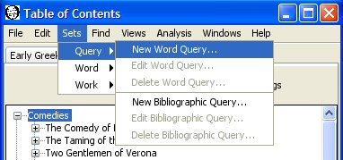
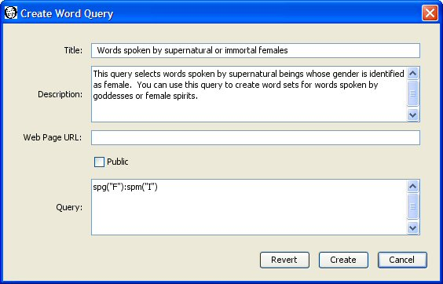
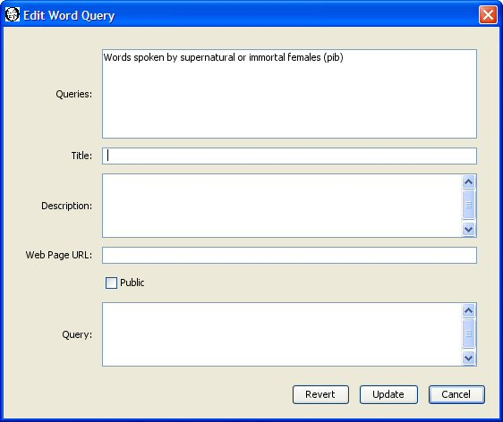
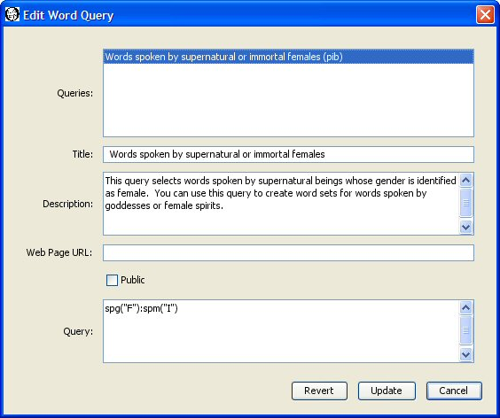
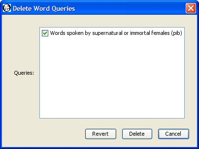

|
|
|
A saved word query allows you save a query template to use in creating word sets. For example, you may want to gather all the words spoken by immortal or supernatural females in a specified set of works. You can create a query that specifies "retrieve words that are spoken by immortal or supernatural females", save that query, and use it to create word sets using different collections of source works. You specify the query using a WordHoard specific internal corpus query language.
To create, edit, or delete a saved word query you must first login so that the Sets menu becomes available. Not all installations of WordHoard allow you to login. You will not be able to create saved word queries on such systems.

Select "Sets, Query, New Word Query" to bring up the create word query dialog.

You must enter a title for the saved word query. The title is a required field. Each of your saved word queries must have a distinct title. Someone else may use the same title for a query. The different account name will distinguish the otherwise identically named queries. We'll use "Words spoken by supernatural or immortal females" as the title of our saved word query.
You may enter an optional description of the query.
You may enter an optional web page URL where more information about the query may be found. It is up to you to create that web page.
A saved word query may be public or private. A public saved word query may be viewed and used by any WordHoard user. A private query may be viewed and used only by the creator, and only when the creator is logged in. Saved word queries are private by default. Select the check box before Public to make the query public.
Specify the query text. We specify we want the words spoken by females (spg("F")) who are immortal or supernatural (spm("I")). The syntax of the WordHoard word query language appears below.
Press the "Create" button to create the query. WordHoard will report if the creation succeeded or failed.
The general form of a word query term is:
[!]termname({text})
!means "do not match the text defined by this term." By default, the text will be matched.
termname is the term name. Example: spe means spelling.
text is the term text. If enclosed in braces, it is assumed to be a regular expression. The term text need not be enclosed in quotes unless it contains blanks or special characters.
Examples:
You may combine terms to form a term set by separating the terms by colons. In our sample query above, spg("F"):spm("I") contains two query terms, spg("F") matching words spoken by females and spm("I") matching words spoken by supernatural or immortal beings. The combined terms form a term set to match both individual query terms simultaneously.
Here is a complete list of the available word query terms.
| Term name | Definition | Parameter values |
|---|---|---|
| spe | Spelling | Spelling text. This must include the trailing word class in parentheses, e.g., "honour (n)". You may also specify an empty text to match any word, e.g., "spe()". |
| lem | Lemma | Lemma text. This must include the trailing word class in parentheses, e.g., "honour (n)". |
| pos | Part of speech | See the table presented by the "Parts of Speech" command in the WordHoard program for a list of valid values. |
| wc | Word class | See the Word Classes table at parts of speech and word classes for a list of valid values. |
| mwc | Major word class | See the Word Classes table at parts of speech and word classes for a list of valid values. |
| spg | Speaker gender | "M" for male, "F" for female, "U" for unknown or unspecified. |
| spk | Speaker name | Name of the speaker, e.g., "Hamlet" |
| ver | Word appears in verse | "Y" for verse, "N" for prose, "U" for unknown or unspecified. |
| met | Metrical shape | A metrical shape value. |
| spm | Speaker mortality | "I" for immortal or supernatural, "M" for mortal, "U" for unspecified or unknown. |
| nar | Narrative or Speech | "Y" for narrative, "N" for speech. Note that not all WordHoard corpora distinguish narrative from speech. |
You can use regular expressions instead of plain text strings in query terms. A regular expression defines a pattern to match characters in a string. The simplest regular expressions are letters and digits which match themselves. These may be combined with a variety of operators to produce very flexible and sometimes very cryptic search patterns.
Anchor operators "anchor" a match to the beginning or end of a string. The caret character ^ anchors a search to the beginning of a string. The dollar sign $ anchors a search to the end of a string. For example, "^bu" matches a string starting with "bu", while "bu$" matches a string ending with "bu".
Repetition operators match zero or more occurrences of a character or string. Some commonly used repetition operators include:
You may concatenate regular expressions to match sequences of characters. For example, a.b.c matches any string with "a" in the first position, "b" in the third position, and "c" in the fifth position. The second and fourth characters can be any characters.
You may separate two or more regular expressions using the vertical bar |. This allows you to match a string which matches any of the subexpressions. For example, John|Fred matches either of the strings "John" or "Fred".
A bracketed expression contains characters enclosed by the bracket characters [ and ]. The bracketed expression matches any single character within the brackets. If you specify the caret ^ as the first character in the brackets, the expression matches any character which is not contained within the brackets. For example, [abc] matches any of the letters a, b, or c, while [^abc] matches any character except for a, b, and c. You may also use the hyphen - to specify a range of characters, according to the collating sequence for the characters. For example, [a-z] acts identically to [abcdefghijklmnopqrstuvwxyz].
Regular expressions are case-insensitive when used in WordHoard saved queries. This means .*falstaff.*, .*Falstaff.* and .*FALSTAFF.* all return the same strings.
You can edit word queries by selecting "Sets, Query, Edit Word Query" from the menu. The edit word query dialog appears.

The top panel of the dialog lists the word queries which you are allowed to edit. You can only edit public or private word queries which you have created. You cannot edit word queries belonging to others. Select the word query you wish to edit. The remaining fields in the dialog change to reflect the current values in the selected word query. For example, select our "Words spoken by immortal or supernatural females" word query. The title, description, web page, public flag, and query text for that word query now appear in the dialog.

You can change the title, description, web page URL, public flag, and query text by entering new values. Press the "Update" button to save any changes you make.
You may delete one or more of the saved word queries you have created by selecting "Sets, Query, Delete Word Query" from the menu. The Delete Word Queries dialog appears with the names of your saved word queries. If you have not created any saved word queries, WordHoard displays a message to that effect instead.

Select the check box next to each word query you want to delete so that a check mark appears in the box. In the sample dialog above the only saved word query available for deletion is "Words spoken by supernatural or immortal females." We have selected that query for deletion by toggling the check box next to it. Press the Delete button to delete the selected queries.
Please be careful. Once you delete a query, it cannot be recovered. You will need to recreate the query if you want to use it again.
|
|
|